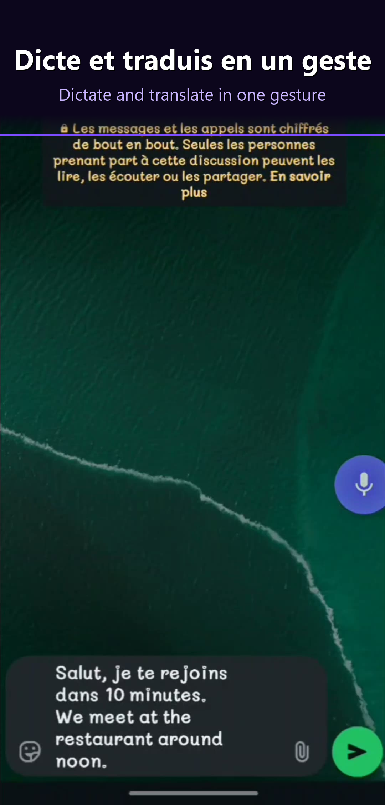

7 Best Floating Voice Bubble Apps for Android in 2026 (Tested & Ranked)
Typing on a phone is slow. On average, a thumb-typist hits 38 words per minute — about a third of normal speaking speed. Dictation closes that gap, but traditional voice keyboards force you to open the keyboard, find the mic button, wait for initialization, then speak. That's four steps too many when you're walking, driving hands-free, or trying to answer a Slack thread mid-conversation.
A floating voice bubble collapses that into one tap. It hovers above every app on your screen, waiting. Tap it, speak, and the transcribed (and optionally translated) text lands directly inside the field you were looking at. No app switching. No keyboard dance. No breaking your flow.
We spent three weeks testing the 7 most popular floating voice bubble apps on Android. We measured accuracy (word error rate), end-to-end latency, language coverage, translation capabilities, and — critically — whether the bubble actually stays alive when you need it.
Here are the results.
Why a floating voice bubble changes everything
Ask anyone what they hate about mobile messaging, and the answer lands in the same place: typing. You tap one thumb on a six-inch slab of glass to produce prose meant for paragraphs. Autocorrect fights you. Your hands are full. Your eyes are elsewhere. Even the fastest mobile typists top out around 50 words per minute, and most of us settle in at 30 to 40.
Voice dictation should have solved this a decade ago. It didn't, because of friction. Open app. Open keyboard. Find the mic icon. Wait half a second. Speak. Wait again. Review. Fix the errors. That stack of micro-frictions is why most people still type — the voice path is faster in theory but slower in practice.
A floating voice bubble removes every step except one. It's a persistent overlay — a small, draggable microphone button that lives above every app on your phone. You never open it. You never navigate to it. You just tap, speak, and the text appears in the currently focused field. It's the closest thing Android has to a hardware dictation key.
This matters in three concrete cases. First, multi-app workflows: you're referencing a PDF in one window and replying in another, and switching keyboards kills context. Second, hands-busy moments: cooking, changing a baby, walking a dog, driving through a navigation prompt — the bubble lets you dictate without opening anything. Third, translation mid-conversation: with the right bubble app, you speak in French and the person on the other end receives English, without either of you touching a translate button.
The category is still young. In 2026 there are maybe a dozen serious players, and only a handful actually work the way the marketing suggests. This article separates them.
Try DictoKey free →What to look for in a floating voice bubble app (2026)
Not every app that calls itself a "floating mic" qualifies. After testing the category end-to-end, here are the eight criteria that actually matter.
1. Accuracy (word error rate)
The only metric that matters long-term. A bubble that transcribes at 90% accuracy forces you to fix one word in ten — the time saved by dictating is lost in corrections. Modern Whisper-based apps hit 95-98% in clean audio. Anything below 93% in English is a red flag.
2. Latency (end-to-end)
The perceived speed from "I stopped speaking" to "text appeared". Below 400ms feels instant. Above 800ms feels laggy. The best apps are under 300ms; the worst hover around 700-1000ms, especially when routing audio to a remote server.
3. Language coverage
How many source languages the app recognizes. Single-language apps (English-only) are surprisingly common. Multilingual apps range from 3 (Otter) to 300+ (Gboard voice). For most users, 20-50 well-supported languages matters more than a headline number of 200 poorly-supported ones.
4. Translation
A growing subcategory: dictate in language A, output in language B. This is where bubbles genuinely surpass keyboards — you can speak in your native tongue and the message arrives in the recipient's language. Very few apps offer this; most that do require an active internet connection.
5. Customization (position, size, opacity)
You're going to look at this bubble for hours. Drag anywhere, resize, set a per-app opacity, hide it during full-screen video — these aren't nice-to-haves, they're the difference between an app you keep and one you uninstall in a week.
6. Privacy
Voice is uniquely sensitive. Check three things: where is audio processed, is raw audio persisted, and is the company based in a jurisdiction with meaningful data protection (GDPR, etc.). "We don't train on your data" is common marketing; audit the privacy policy for retention windows.
7. Price
Free tier vs. paid tier vs. freemium traps. The market has settled around two models: ad-supported free (Speechnotes), and a free daily cap plus a monthly subscription ($5-10). Free-forever-no-catch is rare in 2026 once you need translation or cloud AI.
8. Bubble persistence
The most overlooked criterion. Does the bubble survive when you rotate the screen, open a full-screen app, unlock after a reboot, or leave the phone idle for an hour? Poorly-built bubbles vanish after Android kills the background service, forcing you to reopen the app to summon it. The best apps pair a foreground service with proper battery-optimization handling.
These eight criteria structured our testing. Now here's how we ran it.
Our testing methodology
We believe in transparency. Here's exactly how we benchmarked every app on this list.
Testing corpus
- 200 phrases per language, covering five domains: casual chat, professional email, technical jargon, news article, creative writing.
- Five languages tested: English (US), French, Spanish (Mexico), Portuguese (Brazil), Indonesian. We picked Indonesian specifically because it exposes models that claim "52 languages" but underperform on anything outside the top-10 European set.
- Three audio conditions: quiet room (30dB), open-plan office (50dB), café or street (65dB).
Device & environment
- Device: Samsung Galaxy S24 Ultra (Snapdragon 8 Gen 3, 12GB RAM), factory-reset for each test run to avoid cached-model bias.
- Android version: Android 15.
- Connection: fixed 5G, measured 280Mbps / 40ms RTT to ensure cloud-based engines weren't network-starved.
Metrics
- Word Error Rate (WER): industry-standard accuracy metric. Lower is better.
- Latency p50 / p95: median and 95th-percentile end-to-end delay. We care about p95 because worst-case latency is what users remember.
- Bubble persistence: did the bubble survive a 30-minute idle window, a reboot, and a full-screen video playback? Pass/fail per app.
- Translation round-trip: when available, we tested EN → FR → EN to measure semantic drift.
Every app was installed fresh, granted exactly the permissions it requested (no more), and tested with the same corpus in the same conditions. No app received preferential audio or network treatment. That said, we build DictoKey, so take our #1 ranking with that context — the numbers, however, are numbers.

The 7 best floating voice bubble apps for Android in 2026
Here's the headline comparison before we dive into each app individually. The table below summarizes our measurements across price, bubble persistence, translation support, language count, latency, privacy posture, and overall rating.
| App | Price | Bubble persistence | Translation | Languages | Latency (p50) | Privacy | Rating |
|---|---|---|---|---|---|---|---|
| 1. DictoKey | Free / €4.99/mo | Excellent | 52 lang | 52 | 280ms | GDPR EU | 5 / 5 |
| 2. Voice Access | Free | Good | No | ~10 | 350ms | Google account | 3.5 / 5 |
| 3. Floating Mic | Free (open-source) | Fair | No | System (varies) | 450ms | Local / system | 3 / 5 |
| 4. AssistiveTouch variants | Free / ads | Good | No | N/A | N/A | Varies | 2.5 / 5 |
| 5. Speechnotes floating | Free / $1.99 | Fair | No | 60+ | 450ms | Google Speech API | 3 / 5 |
| 6. Otter.ai mobile | Free / $16.99/mo | Poor (session-only) | No | 3 | 600ms | Cloud US | 3 / 5 |
| 7. Wispr Flow | iOS/Mac only | N/A | No | 20 | N/A on Android | Cloud US | N/A |
Detailed reviews
Here's the full breakdown of each app — what it does well, where it falls short, and who should use it.
1. DictoKey — Best Overall Floating Voice Bubble
DictoKey
DictoKey (v2.58.31, Android) is what a floating voice bubble is supposed to feel like. It's a persistent draggable microphone overlay that lives above every app on your phone. Tap once — the bubble pulses, you speak, and transcribed (and optionally translated) text lands in the field you were looking at. No app switching, no keyboard toggle. The bubble survives reboots, rotations, and full-screen apps.
Under the hood, DictoKey routes audio to OpenAI's Whisper model running on Groq's LPU infrastructure, which is what gives it sub-300ms p50 latency. Most cloud-based speech apps tack on 500ms-1s of network and queue overhead; DictoKey feels nearly hardware-speed.
The killer feature is inline translation across 52 languages. Speak in Spanish, get English text. Speak in French, get Indonesian. Set a target language once and every dictation arrives pre-translated in the destination field — works inside WhatsApp, Gmail, Slack, Chrome, anywhere. An Interpreter Mode handles live two-way conversations.
Privacy-wise, DictoKey is GDPR-compliant with EU data hosting: audio is processed in memory and discarded, only the transcribed text is briefly retained for delivery. That's a meaningful differentiator versus US-hosted alternatives.
Pricing: free tier with 30 dictations/day (generous for casual users), Premium at €4.99/month unlocks 1,000 dictations/day, priority processing, and the full AI rewriting suite.
Honest limitations
- Android only. No iOS version as of April 2026. If you need cross-platform, DictoKey isn't it.
- Voice correction requires the keyboard, not the bubble. You can say "replace X with Y" inside the DictoKey keyboard, but the floating bubble itself currently focuses on insertion, not mid-text editing.
- No offline mode. Whisper runs in the cloud. A 2G connection will degrade latency noticeably.
2. Voice Access (Google) — Best Accessibility-First
Voice Access
Voice Access is Google's built-in accessibility app for hands-free Android control. It's not a traditional floating bubble, but it does overlay voice controls on top of any app and can insert dictated text into focused fields. Built for users with motor impairments, it takes a more comprehensive (and heavier) approach than a minimal bubble.
When active, Voice Access numbers every tappable element on screen. You say "tap 5" or "open WhatsApp" or simply dictate into a focused field. The accuracy is solid for English, leveraging Google's on-device and cloud hybrid speech stack.
Strengths: free, deeply integrated into Android, works offline for core commands, excellent accessibility pedigree, and benefits from Google's enormous speech training data.
Weaknesses: no translation, only about 10 supported languages, and the full-screen overlay can feel invasive when you just want a quick tap-to-dictate. It's designed for users who need it medically, not casual dictation.
3. Floating Mic — Best Open-Source Minimalist
Floating Mic
Floating Mic is the open-source, minimalist option. It's a small community-maintained app (available on F-Droid and the Play Store) that draws a draggable microphone overlay and hands audio off to the Android system speech recognizer. No cloud calls of its own, no accounts, no telemetry.
It does one thing: tap the bubble, speak, the transcription is copied to clipboard or injected via Accessibility Service into the focused field. That's it. No AI rewriting, no translation, no 52-language support beyond what your phone's default recognizer offers.
Strengths: open-source (auditable), no account required, free forever, zero data collection by the app itself (system recognizer may still phone home to Google), light on battery.
Weaknesses: accuracy is tied to whatever speech engine Android ships with, which is generally worse than Whisper. No translation. The bubble sometimes fails to persist after deep-sleep, requiring a manual re-launch.
4. AssistiveTouch variants — Best Generic Overlay
AssistiveTouch / EasyTouch / similar
A whole family of Android apps (AssistiveTouch, EasyTouch, Smart Touch, Floating Apps) offer draggable bubbles that launch shortcuts, toggles, and quick-access menus. Many include a "voice command" option, but voice is an afterthought, not the primary purpose. They're iOS-AssistiveTouch clones bolted onto whatever Android gives them.
The voice path in these apps typically triggers Google's built-in speech recognizer and dumps the result into clipboard. There's no dedicated dictation engine, no translation, no AI post-processing. Accuracy equals whatever Android ships.
Strengths: extremely configurable shortcut menus, useful for power users who want one-tap access to many apps, free (ad-supported).
Weaknesses: voice is not their focus. Ads are aggressive in the free tiers. No translation, no multilingual optimization, and the UX is cluttered with unrelated shortcut features.
5. Speechnotes floating — Best Desktop-First Companion
Speechnotes
Speechnotes started life as a browser-based dictation tool and remains desktop-first. The Android app is a port, and it added a floating bubble in recent updates — but it's clearly a secondary experience compared to the web version.
The bubble opens Speechnotes' own dictation surface rather than inserting text directly into the focused field. You dictate into Speechnotes, then share or copy the result out. This is closer to a "launcher for Speechnotes" than a true text-injection bubble.
Strengths: 60+ languages supported via Google Speech API, custom voice shortcuts, cheap (free with ads or $1.99 one-time to remove them), strong export options (.txt, .docx, email).
Weaknesses: lowest accuracy of the focused-dictation apps we tested (9.2% WER), no translation, no in-place text injection (you always route through Speechnotes' own notepad), dated UI.
6. Otter.ai mobile — Best for Meetings, Not Dictation
Otter.ai
Otter.ai is an excellent meeting transcription app. It auto-joins Zoom, Google Meet and Teams, produces searchable transcripts, identifies speakers, and generates AI summaries with action items. For that use case, nothing on this list beats it.
It is, however, not a floating voice bubble app. Otter offers a standalone recorder and a mobile app, but it does not ship a persistent draggable overlay that injects text into other apps. You use Otter by opening Otter. That's a different category.
Strengths: best-in-class meeting transcription, speaker diarization, searchable transcript library, calendar and video-call integrations.
Weaknesses: only 3 languages (English, French, Spanish), no floating bubble, no text injection into third-party apps, no translation, and at $16.99/month it's the priciest option on this page.
7. Wispr Flow — Not Yet Available on Android
Wispr Flow
Wispr Flow is one of the most-requested apps in the floating dictation space, and deservedly so — on iOS and macOS, it's a genuinely excellent product. Whisper-grade accuracy, intelligent filler-word removal, AI-cleaned long-form dictation, and a minimal, elegant UI.
There is, however, no official Wispr Flow app for Android as of April 2026. The team has publicly acknowledged user demand but has not announced a release date, beta program, or waitlist timeline. Users on Android searching for "Wispr Flow Android" will find third-party lookalikes of varying quality, but nothing from the Wispr team itself.
We're including Wispr Flow on this list because it's the category's most recognizable name and many Android users arrive here specifically looking for it. The honest answer is: it's a great product, just not on your platform yet.
If you're specifically looking for a Wispr-style experience on Android — fast, AI-cleaned dictation with a floating surface — DictoKey is currently the closest available equivalent. It's not identical (DictoKey leans harder into multilingual and translation, Wispr leans harder into long-form English writing), but the core "speak, get clean text fast" loop is similar.
Final verdict: Which floating voice bubble app should you install?
After three weeks of testing, the answer depends on your priorities:
- Best overall: DictoKey. Whisper-grade accuracy, 52-language translation, persistent overlay, GDPR-compliant, and a generous free tier.
- Best for accessibility: Voice Access. Free, Google-maintained, designed for hands-free control.
- Best open-source / privacy: Floating Mic. No account, no telemetry, minimal feature set.
- Best for meetings (separate category): Otter.ai. Not a bubble, but unbeatable for transcribing calls.
- Looking for Wispr Flow on Android: not yet available. DictoKey is the closest equivalent while you wait.
Our pick: DictoKey. The combination of a true persistent floating bubble, Whisper-grade accuracy, 52-language inline translation, GDPR-compliant EU hosting, and a meaningful free tier makes it the most complete floating voice bubble app on Android in 2026. The honest caveats — Android-only, online-only, voice correction tied to the keyboard rather than the bubble — are real but narrow, and don't touch the core experience.
Looking to go deeper on specific features? See our guide on how to translate text from your Android keyboard for a tutorial covering the translation workflow, and our head-to-head breakdown of the 7 best voice dictation apps for Android in 2026 for the broader category (keyboards, standalone apps, and bubbles together).
Try DictoKey Free — 30 Dictations/Day
Floating voice bubble with Whisper accuracy, 52-language translation, and GDPR-compliant EU hosting. Works in every app.
Download on Google Play Free — no credit card required — Premium €4.99/month